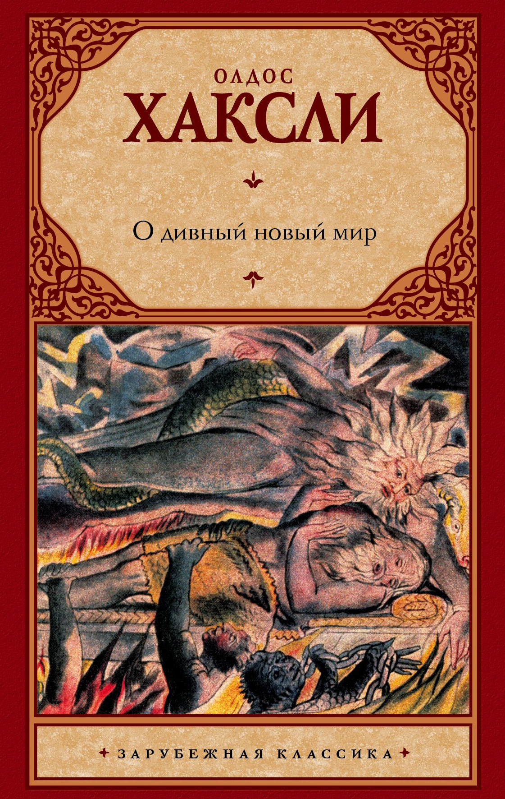
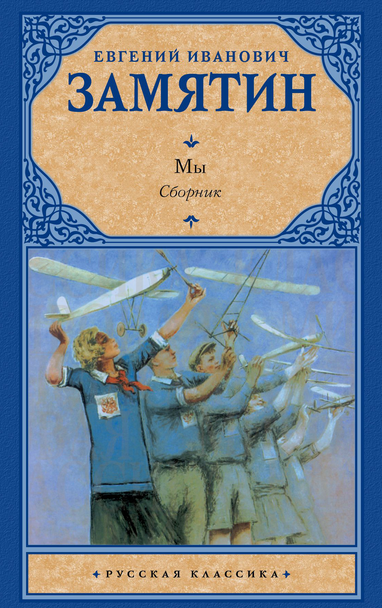
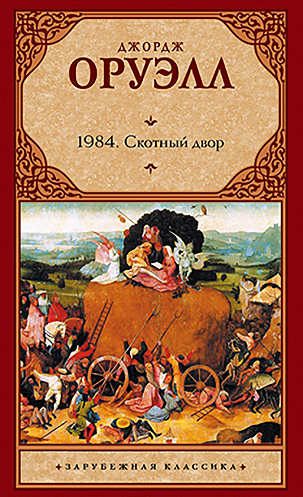
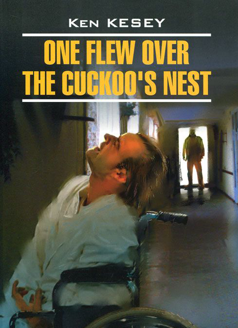
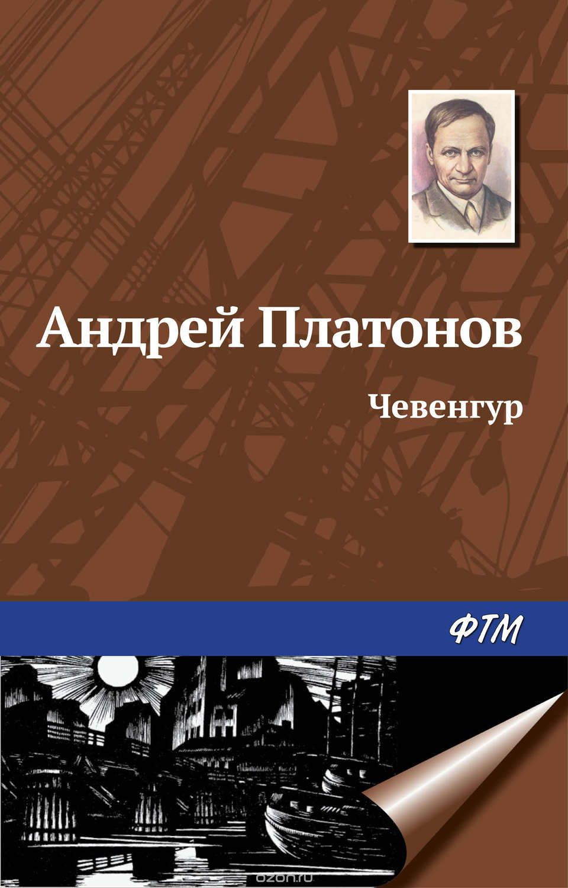
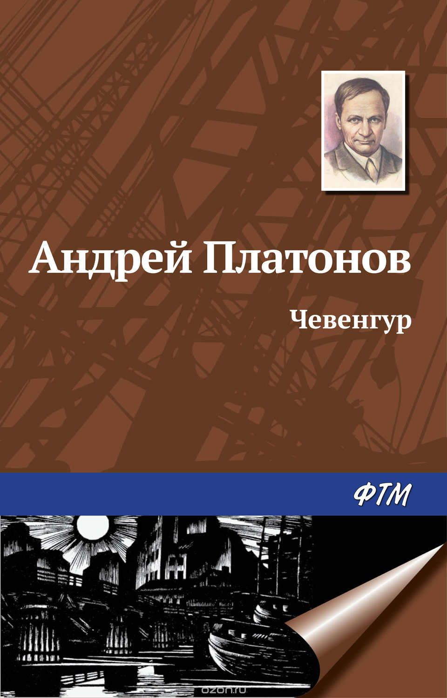
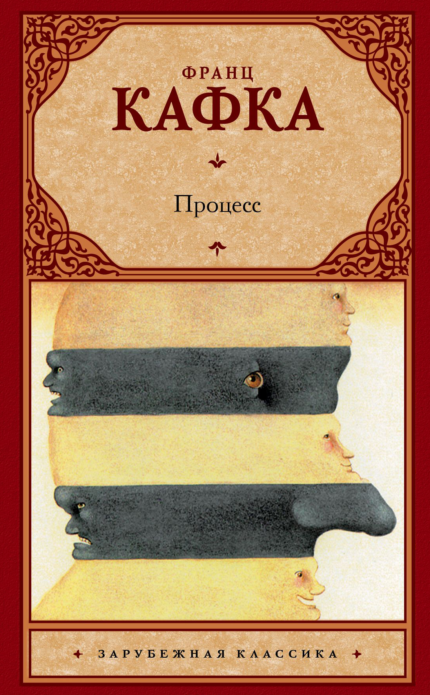
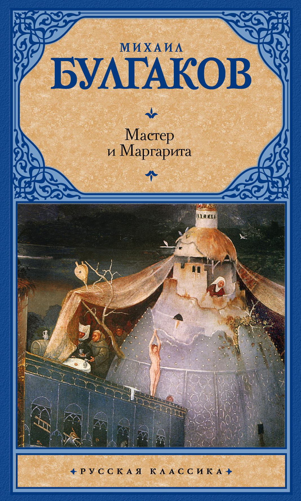

{kind=link}
"О дивный новый мир" - изысканная и остроумная антиутопия о генетически программируемом обществе потребления, в котором разворачивается трагическая история Дикаря - "Гамлета" этого мира...
{kind=link}
МЫ. Самая прославленная антиутопия Замятина. Одна из самых знаменитых антиутопий мира. От МЫ отталкивался, по его собственным словам, Олдос Хаксли в своем "Дивном новом мире". Без МЫ не существовало бы поразительного романа "1984" Оруэлла. "Славное будущее" по Замятину... Мир, в котором быть личностью - уже преступление.

{kind=link}
Своеобразный антипод второй великой антиутопии XX века- "О дивный новый мир" Олдоса Хаксли. Что, в сущности, страшнее: доведенное до абсурда "общество потребления" - или доведенное до абсолюта "общество идеи"? По Оруэллу, нет и не может быть ничего ужаснее тотальной несвободы...
{kind=link}
Герой-повествователь Бромден по прозвищу Вождь (потому что его отец был последним вождём своего племени) притворяется немощным, глухонемым и слабоумным, чтобы спастись в стенах психиатрической больницы от жестокости и равнодушия "нормальной" Америки. Этот роман можно читать как исследование противоречивой борьбы между желанием быть свободным и страшными последствиями этой свободы.
![ Андрей Платонов (1899-1951) по праву считается одним из лучших писателей XX века. Однако признание пришло к нему лишь после смерти. Роман «Чевенгур» был написан в 1926-1929 годах, но при жизни автора так и не увидел свет. Это не просто самый большой по объему платоновский роман, но и своеобразная веха в творчестве художника. В нем писатель подверг критическому пересмотру, порою доводя до абсурда, «ультрареволюционные» идеи, которые находили выражение в его ранних произведениях. Страшная и прекрасная книга!..](images/fulls/05.jpg){kind=link}
Андрей Платонов (1899-1951) по праву считается одним из лучших писателей XX века. Однако признание пришло к нему лишь после смерти. Роман «Чевенгур» был написан в 1926-1929 годах, но при жизни автора так и не увидел свет. Это не просто самый большой по объему платоновский роман, но и своеобразная веха в творчестве художника. В нем писатель подверг критическому пересмотру, порою доводя до абсурда, «ультрареволюционные» идеи, которые находили выражение в его ранних произведениях. Страшная и прекрасная книга!..

{kind=link}
![ Многообразное и удивительное творчество Михаила Булгакова давно получило всемирное признание. Его читают и перечитывают во всех уголках планеты, приобщаясь к причудливой фантазии русского гения. Самый знаменитый свой роман "Мастер и Маргарита" писатель создавал на протяжении одиннадцати лет, переделывая и дополняя текст почти до самой смерти. Однако должно было пройти еще почти тридцать лет, прежде чем произведение вышло в свет и стало одним из величайших шедевров русской прозы XX века. Роман неоднократно ставился в театрах России и за рубежом и послужил основой для многих кинофильмов.](images/fulls/07.jpg){kind=link}